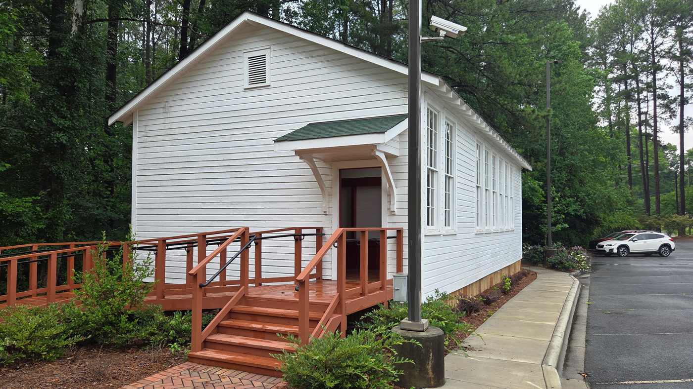
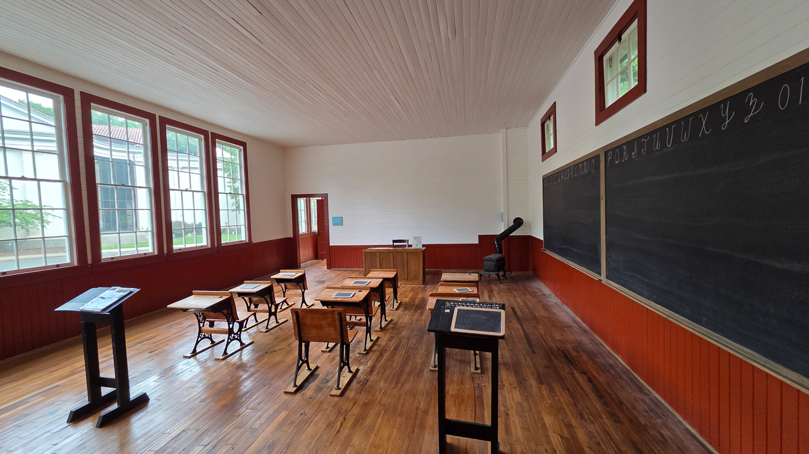
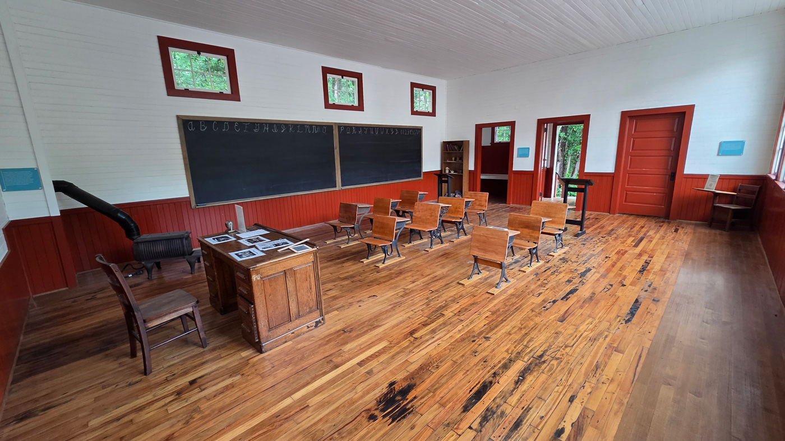

A Side Trip in Charlotte — Walking Through the Siloam School
On a recent trip to Charlotte, I visited the Charlotte Museum of History, where the restored Siloam School — a one-room school built around 1924 for Black students in Mecklenburg County’s Mallard Creek Township — now stands at the front of the museum campus. The little building had survived as a family home and then an auto body shop before a community campaign saved it, moved it eight miles to the museum in 2023, and reopened it as a teaching space in June 2024.

The restored Siloam School at the Charlotte Museum of History, June 2026. The battery of tall windows ganged along one side wall — the signature of the Rosenwald school designs — lights the single classroom from one direction only, exactly as the plans prescribed. Author’s photo.
I’m no expert on Rosenwald schools, but two things about the visit stuck with me. The first was a binder on one of the school desks: a reproduction of the Julius Rosenwald Fund’s Community School Plans bulletin, the catalog of standardized schoolhouse designs from which Siloam was built. The second was the realization that Bowie has its own chapter in this same story — the Bowie “Colored” School in Huntington (Old Town Bowie), the Duckettsville School, and the Collington School were all products of the same program and the same printed plans. It seemed worth reading the bulletin closely and comparing what it prescribed with what was actually built, both in Charlotte and back home.
From Tuskegee to Nashville — A Catalog of Schools
A reader leafing through Community School Plans might mistake it for a Sears, Roebuck catalog of schoolhouses — and the comparison is not entirely wrong. Julius Rosenwald presided over the company that mailed entire houses to American doorsteps, and the school-building program he financed at Booker T. Washington’s urging shared the catalog’s central idea: that a well-engineered design, printed and distributed at scale, could deliver quality to places the market and the state had abandoned. But where Sears shipped lumber, the Rosenwald Fund shipped standards. (Rosenwald himself reportedly rejected the suggestion of ready-cut mail-order schoolhouses as “impractical” — consistent with his insistence that each community be deeply involved in raising its own building.)
The program began at Tuskegee Institute, where Washington’s vision and architect Robert R. Taylor’s drawings shaped the first experimental schools of 1912–1919. After a critical 1920 inspection report by Fletcher Dresslar of Peabody College found shoddy construction and plans that failed his standards for lighting, ventilation, and sanitation, the Fund moved design and management to a new Southern Office in Nashville under S. L. Smith. Smith and Dresslar produced the standardized plans that defined the program’s mature decade, published and republished from 1920 to 1931.
The bulletin’s foreword, signed by Smith as “General Field Agent for Rural Schools” in September 1924, frames the designs as products of measurement, not taste. Demand for full sets of plans 1 through 17 had been so great that the Fund issued Bulletin No. 3, gathering every Community School plan prepared to July 1, 1924, together with specifications, directions for selecting school grounds, and a bird’s-eye layout of a model two-acre plot. The plans were benchmarked against the National Education Association’s Committee on Schoolhouse Planning and Construction, which set 50 percent of floor area devoted to instruction as a minimum; Smith reported that no Community School plan fell below 65 percent, and most exceeded 75 — corridors were deliberately omitted from several plans to push the ratio higher. A “Foot-Candle Meter” had been carried into completed schools to verify that classrooms built to plan had ample daylight at all times of year. Blueprints, specifications, and bills of material were furnished free through each State Department of Education once a community had “carefully selected” its plan.
That last clause mattered, because the plans were not interchangeable — as the bulletin’s most distinctive doctrine makes clear.
The Doctrine of Light
If the Rosenwald program had a theology, it was daylight. The bulletin’s section on locating the building rises into capital letters to make the point: the building should always be set with the points of the compass, and the plan so designed that every classroom receives east or west light. A plan drawn to face east or west could not properly be used facing north or south, and vice versa. Every floor plan in the bulletin carries the corresponding instruction in its title block — “To Face North or South Only,” “To Face East or West Only” — because orientation determined which walls could carry the program’s architectural signature: the battery of tall windows, usually five or six ganged together, flooding each classroom with natural light from one side.

Inside the restored Siloam School: the window battery on one side, blackboards on the interior wall with small pivoting “breeze windows” above them for cross-ventilation, darker wainscoting below the window-sill line, and rows of patent desks with slates. The classrooms of the Bowie-area Rosenwald schools — built to the same published specifications — probably looked much like this, though Bowie’s were larger two-classroom buildings. Author’s photo.
The companion essay “Lighting the Classroom” reads like a public-health tract, and in 1924 it essentially was. A child, it argues, needs more light to read and study than an adult; insufficient light draws the book too close to the eyes until the child becomes “near sighted.” With an estimated two million American schoolchildren suffering defective eyesight — blamed in large measure on improper school lighting — the bulletin prescribed remedies in obsessive detail. The dark green roll shade fastened at the window head was condemned twice over: pulled halfway down, it blocked three-quarters of the light on the dark side of the room, and it sealed off the ventilation of hot air at the ceiling. The approved alternative was an adjustable tan shade mounted at the window’s middle, rolling both up and down, hung so that the top 10 to 12 inches of glass stayed clear to let high sky light reach the desks across the room.
Even the paint scheme was treated as optical equipment. The “General Directions for Painting Community Schools” specified non-gloss finishes selected so as not to injure the eyes of teacher and pupils who must remain inside the classrooms for six hours or more each day, and offered approved combinations — Color Scheme No. 1 with cream ceiling, buff walls, and walnut wainscoting; Color Scheme No. 2 with ivory cream ceiling and light gray walls — calibrated to reflect and diffuse light above the eye line while damping glare below it. And the Fund put money behind the doctrine: the painting directions state flatly that the Fund would not aid in the construction of any building improperly lighted and painted.
The first commandment in the Bible — “Let there be light” — should be religiously kept by every teacher and school official.
— “Lighting the Classroom,” Community School Plans, 1924A Building for the Whole Community, Privies Included
The bulletin’s vision extended well past the classroom walls. The school-grounds chapter called for a site near the center of population, well drained, with pure water — at least two acres for a one- or two-teacher school (a 210-by-420-foot rectangle was suggested), with larger schools needing more, and “FIVE ACRES” pronounced a very desirable site. The acreage was programmatic: separate playgrounds for boys and girls, an agricultural demonstration plot, room for a teachers’ home. The building itself was designed to serve the entire community for twelve months in the year. Larger plans seated the adult community in an auditorium; smaller ones achieved the same end with movable partitions — folding doors, carefully trussed overhead to prevent sagging, or pivoting blackboard partitions — that threw two classrooms together into a meeting hall. Maryland’s surveys confirm how often that feature was exercised: the state’s most common designs, Susan G. Pearl observed, often used movable partitions precisely to open the classrooms for wider community use.
Sanitation carried the same force as lighting. Every school receiving Rosenwald aid was required to have two sanitary privies built to a plan approved by the State Board of Health, painted to harmonize with the schoolhouse, located a safe distance from the water supply, and properly screened from view. The bulletin describes the three approved southern types — the fly-proof pit, the concrete septic tank, and the concrete vault — and sets capacity at roughly one seat per fifteen to twenty children. Enforcement was again financial: final payment on the building would be withheld by the State Department of Education until the community met this part of the agreement.
Then, remarkably, the program followed the school out into its yard. The reprinted “Suggestions for Beautifying School Grounds” (Leaflet No. 2, July 1923) descends to the level of seed mixes — perennial rye, white clover, Kentucky bluegrass, and lespedeza, raked in by hand and mown at six inches — and planting plans that massed shrubs naturally at the angles and curves of walks, screened the privies and woodsheds behind lilac, mock orange, and forsythia, and spaced shade trees twenty to forty feet apart along the road while warning, in keeping with the doctrine of light, never to plant trees close enough to classroom windows to cut off the sky. Communities wanting horticultural help were directed to their Farm Demonstration Agent, to Hampton Institute, and to Tuskegee — the program’s roots showing through the lawn.
The Fine Print
Between the inspirational perspective sketches and the landscaping advice sits the unglamorous heart of the bulletin: pages of general specifications binding the contractor to a standard of work that many rural communities — Black or white — had never seen enforced. Footings level and plumb; framing of No. 1 pine, studs doubled at every opening; sheathing laid diagonally; double-hung windows with weights, cords, and pulleys, glazed with double-strength glass, and pointedly no wider and no lower than shown on the plans; pivoting breeze windows in the interior partitions, screened against excessive cross light, to pull air through the building. Inside, the specifications fixed roughly forty lineal feet of blackboard per classroom and set the chalk rail at 28 inches above the floor for the primary grades, 30 for intermediate, and about 34 for the upper grades — ergonomics, 1924 edition.
The board of education reserved the right to inspect at all times and to reject poor workmanship; extra work required written authorization; and on completion the contractor was to remove all scraps, leave the premises “broom clean,” and clean every paint drip from floors, windows, and walls before the building could be accepted. For communities whose previous schools had been — in the words of Maryland’s State Agent for Negro Schools, J. Walter Huffington — churches, lodge halls, and structures “totally unfit for school purposes,” the specifications were as much a statement of dignity as the architecture.
Plans on the Ground — Siloam and the Bowie-Area Schools
How faithfully were the plans followed? Comparing Siloam with the schools of Prince George’s County suggests a consistent answer: faithfully in spirit, flexibly in detail.
The museum’s exhibit explains that the Mallard Creek community built Siloam on Community School Plan No. 1-A — the one-teacher design with a 22-by-30-foot classroom, an attached industrial room, and the prescribed orientation, window batteries, and paint colors — but made it their own. The movable partition the plan called for was scrapped in favor of a solid wall; there is no evidence the specified bookshelf was ever built into the northwest corner; and the builders sprang for cherry flooring in place of the pine the plans suggested. The museum’s research adds a deeper irony: although the Charlotte-Mecklenburg school system bought the land, no evidence has surfaced that the community ever received Rosenwald money at all. Siloam may be a “Rosenwald school” by plan rather than by funding — a measure of how completely the published designs had become the regional standard for what a proper school looked like.

The teacher’s end of the Siloam classroom: oak desk, wood stove, blackboards with the cursive alphabet, and the restored floors — their scars a reminder of the building’s decades as a home and auto shop before its rescue. With the same stoves, desks, blackboards, and finishes specified in the plans, the interiors of Bowie’s Rosenwald schools probably presented a very similar scene. Author’s photo.
Bowie has a direct sibling of Siloam: according to Pearl’s statewide study, the Duckettsville School of 1923 — one of eight Rosenwald schools built in Prince George’s County in the 1922/23 year alone — was built on the very same Plan 1-A. And the county’s two-teacher schools show the variation story even more clearly. In the 1926/27 building year, four schools — Bowie, Clinton, Collington, and Ridgeley — went up on a shared two-teacher design that appears nowhere in the published bulletin. Pearl documents that Maryland’s most popular two-teacher designs were variations on Plan No. 20, and that a favorite hybrid crossed Plan 20 with the three-teacher Plan No. 3: eliminating the projecting industrial room or moving it to the rear, and replacing Plan 20’s twin doors with a single inset entrance opening into a central corridor between the two classrooms. Her 1983 floor-plan sketch of the Bowie “Colored” School (Maryland Inventory of Historic Properties PG:71B-10) reads as a textbook example once decoded: classrooms east and west, each lit by the canonical battery of windows on its outer wall — the building duly facing south, per the compass doctrine — with projecting cloakroom wings flanking the recessed entrance, and the ghost, in dashed lines, of the central core later removed in conversion.
The restored Ridgeley School in Capitol Heights — two classrooms separated by a hall and cloakroom, each lit by five tall twelve-over-twelve windows, now an M-NCPPC museum — preserves that plan in three dimensions: the closest a Prince Georgian can come today to standing inside the vanished Bowie school.
Why the Standard Endured
The Rosenwald Fund helped build more than five thousand schools in fifteen states — 156 of them in Maryland, more than 800 in North Carolina — and the Community School Plans bulletin is the connective tissue among them all. Standardization was the program’s pragmatic answer to an impossible problem: how to deliver state-of-the-art school design to thousands of underfunded rural communities at once, with quality controlled remotely through inspections, withheld payments, and the discipline of the printed page. Yet the standard was never a straitjacket. Communities substituted cherry for pine and solid walls for folding partitions; state agents brokered hybrid plans suited to local needs; and in at least one Mecklenburg County township, a community may have built to the plan without the Fund’s money at all, because the plan itself had become the symbol of what their children deserved.
That is also why the survivors are findable today. The battery of tall windows, the hip or gable roof, the compass-true orientation, the cloakroom wings — these are fingerprints, legible whether the building became a museum like Siloam and Ridgeley, an American Legion post like Clinton, apartments like Collington, or only a set of dashed lines on a 1983 survey sketch, like the school at Bowie. The bulletin’s first commandment turned out to apply to the historical record as well as the classroom: let there be light.
† Pearl’s 2010/2014 statewide survey lists Clinton, Collington, and Ridgeley as the survivors of the county’s 1926/27 two-teacher quartet — the Bowie school is not among the surviving buildings inventoried, and its post-1983 fate is a research question in its own right.
Sources & Further Reading
Julius Rosenwald Fund, Community School Plans (Bulletin No. 3, Nashville, September 1924) — Foreword by S. L. Smith; “The School Grounds”; “The Building”; “Location on the Plot”; “Lighting the Classroom”; “General Specifications and Directions”; “Rural Sanitary Privies”; “General Directions for Painting Community Schools”; “Suggestions for Beautifying School Grounds” (Leaflet No. 2, July 1923). Read in the reproduction binder displayed in the Siloam School, June 2026; the bulletin has been digitized by HistorySouth.